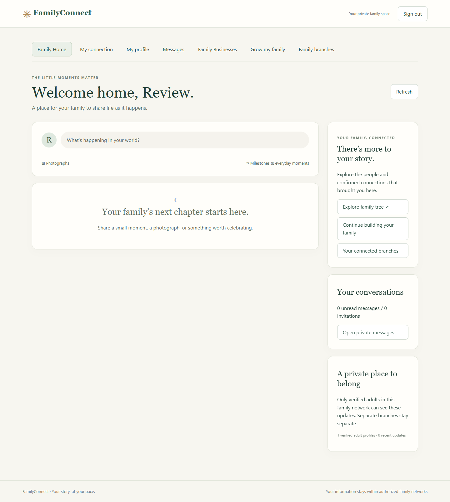
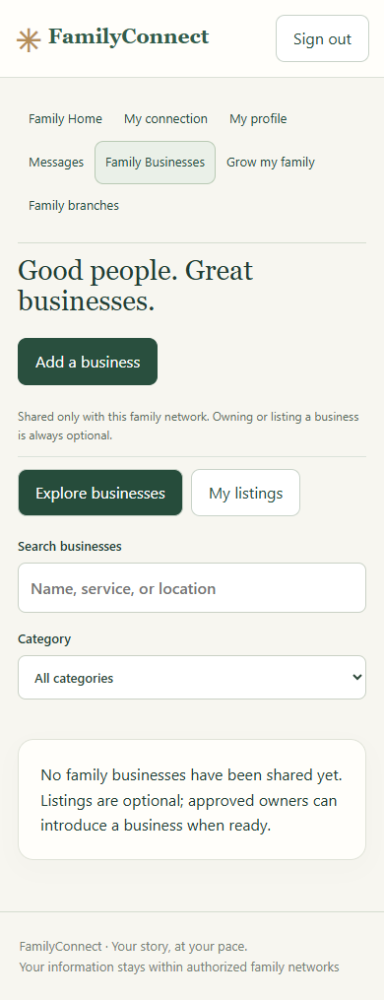
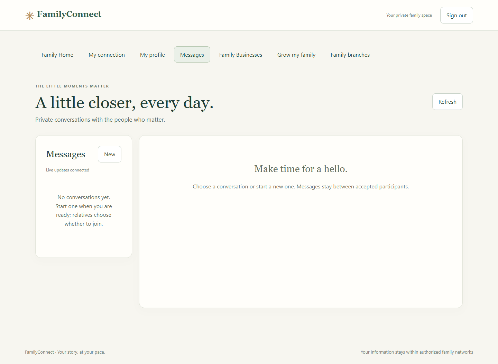
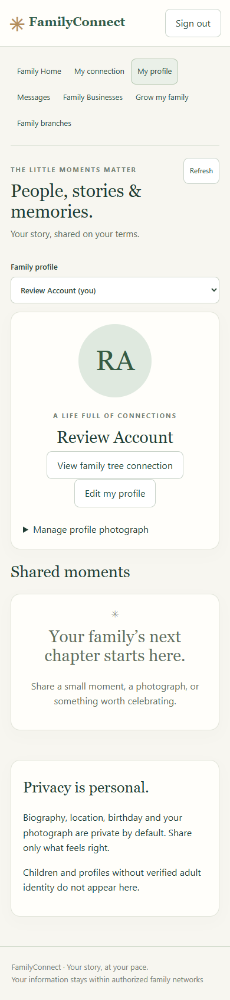
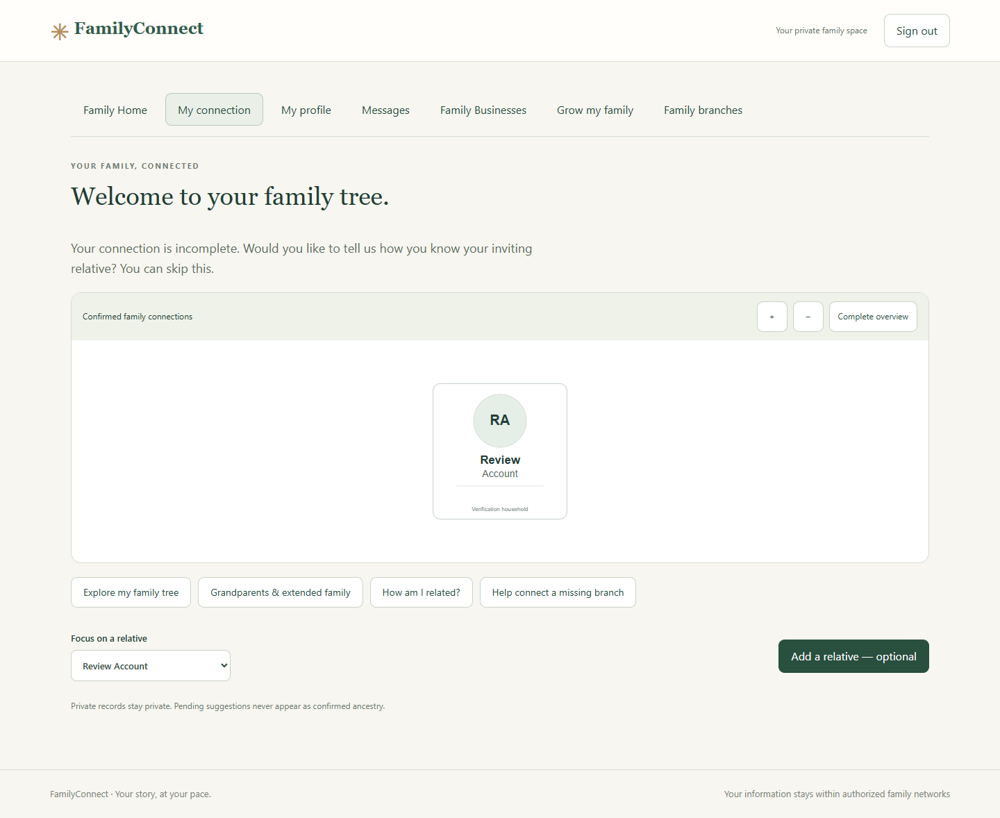
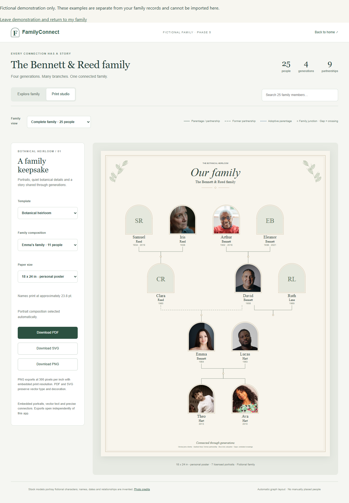

21 October 2026 · Local implementation complete; hosted release remains blocked.
Release builds exclude fictional family datasets, the demonstration studio, stock portraits, legacy routes and generated evidence. The fresh-database test passed against an independent local Supabase stack and the compiled release application. Existing development fixtures remain available. No hosted database access, deployment or real invitations occurred.
Full inventory: file paths, image hashes and credits, local table/bucket counts and private artifact locations. This includes eight stock photographs and their license file, 64 source/test producers or references, 234 generated evidence artifacts and scratch/reference assets. Counts describe local development only.
| Category | Sources and storage | Disposition |
|---|---|---|
| Fictional families | src/family/fixture.js, fixture100.js, fixture300.js; premium-samples.js selects 11/15/25/40 relatives. FamilyPrototype consumes these in memory. | Retained for explicit local demonstration and tests; prohibited in release bundles. Pure name/layout/template utilities separated from fixtures. |
| Stock portraits | public/family-portraits/{arthur,iris,david,helen,emma,lucas,ava,theo}.jpg. sources.json records individual Pexels sources and license. These are stock models assigned fictional roles, not actual family records or generated people. | Preserved locally; no public assets copied to release. Real graph adapter rejects known stock/demo URLs; missing photos use initials. |
| Accounts, invitations, relatives and drafts | scripts/phase6-local.mjs, phase6b-fixture.mjs, phase6b-demo.mjs, first-time/passwordless/security/browser tests. Stored in isolated Auth and familyconnect tables. Ignored private checkpoints contain local credentials and invitation links. | Fixture scripts guard the local project/API and reject release environments. Automatic db.seed disabled. Never copy private checkpoints or development database dumps to beta. |
| Posts, comments, conversations and images | scripts/phase7-fixture.mjs, phase7-demo.mjs and social tests. Stored in familyconnect social tables and private family-private storage bucket. Tests can leave additional fictional examples. | No starter content in migrations or startup. Empty feed and messaging views give neutral prompts. |
| Businesses | scripts/business-fixture.mjs, business-demo.mjs and business tests. Fictional listings, owners, offers, links and contacts in local business tables; generated logos and reused stock staff portraits optimized into private storage. | Directory remains optional and empty until authorized creation. No fictional businesses or owner accounts in release. |
| Exports and previous development evidence | output JSON/PDF/SVG/PNG/screenshots; tmp reference images and renders; historical reports; ignored private checkpoints. Paths and aggregate counts in inventory. | Retained, excluded from release. Netlify now publishes only dist-release instead of the repository root. |
| Suite | Passed | Evidence |
|---|---|---|
| Fresh migrated database and release browser journeys | 12 | Initial/final zero counts and checks; 15 migration hashes; artifact list |
| Release boundaries | 8 | Results |
| Local opt-in demonstration | 3 | Results; rerun after neutral template title changes |
| Family engine and premium compositions | 53 | Recorded test runner result |
| Social / business / passwordless browser regressions | 22 / 23 / 5 | Social, business, passwordless |
126 scenarios passed across these suites. Initial concurrent social/business runs timed out under build/two-stack load; isolated reruns passed. Social test messages now use unique per-run strings to avoid collisions with preserved conversations. This audit did not rerun every historical security suite or independently re-render every poster PDF.
The new familyconnect-clean-audit stack has zero Auth users, stored objects and rows in every familyconnect table before and after testing. Its private storage bucket exists as empty configuration; Auth service operational metadata may remain. Only after asserting the empty baseline did the test create a disposable account and explicitly provision a verification household/profile to inspect authorized empty states. It removed only those new probe records afterward. “Review Account” in screenshots is this probe, not automatically generated content.






Use Node 22+ and Docker. Run npm run test:release-boundary. Run npm run prepare:clean-audit, supabase start --workdir local/clean-audit, then npm run test:clean-start for the separate empty stack (ports 56321/56322, preview 5186). Scripts refuse linked workspaces. Do not substitute or reset the existing development database. npm run audit:demo refreshes aggregate counts on the original local stack. See build/environment instructions and release gates.